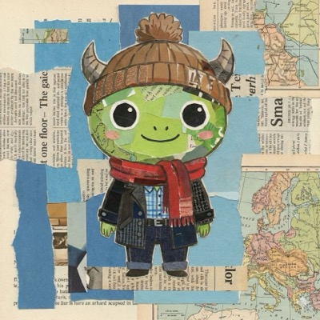
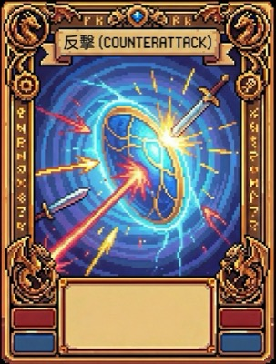
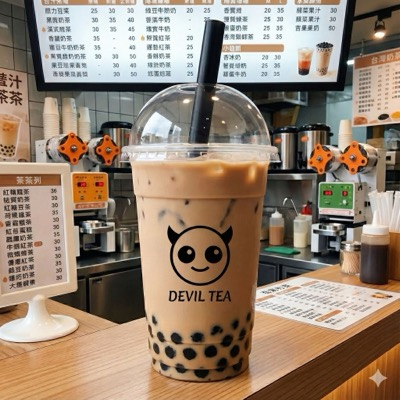
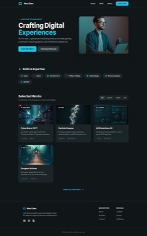

實戰主題
PROGRAM 四大主題，真實作品產出
每個主題都對應實際可展示的成品，
從個人 IP、影像敘事、遊戲開發到網頁品牌，循序建立完整 AI 創作能力。
01
● Character Design
打造專屬 IP：
打造專屬 IP：
什麼樣的角色能代表我？
不想用現成的圖庫？那就自己創造！從角色三視圖開始，學習如何將腦中的形象具象化。
- 製作專屬 Line 貼圖（融入隱私權與肖像權）
- AI 工業設計建模，將角色變成 3D 玩具宣傳圖
- 結合地標生成，做角色環遊世界的明信片
- 學習品牌跨界美學，設計聯名包裝周邊
📌 角色三視圖
📌 Line 貼圖
📌 3D 玩具圖



02
● Image & Storytelling
影像說故事：
影像說故事：
從繪本到動畫電影
學習生成式 AI 的原理，讓孩子成為導演，用影像說出好故事。
- 用 AI 製作完整繪本，學習起承轉合的敘事
- 運用影格原理，將靜態圖像轉化為動態影片
- 掌握攝影構圖視角，設計吸睛的 AI 電影海報
📌 AI 繪本
📌 AI 影片
📌 電影海報


03
● Game Design
遊戲開發者：
遊戲開發者：
製作你的卡牌對戰遊戲
結合美術與程式邏輯，從零打造一款真正能玩的遊戲。
- 運用負面提示詞（Negative Prompt）優化生成
- 生成遊戲場景、道具圖與戰鬥卡牌插畫
- 運用 AI 輔助程式撰寫，完成卡牌對戰遊戲
📌 戰鬥卡牌
📌 場景道具
📌 可玩遊戲


04
● Web Design & Personal Brand
個人品牌：
個人品牌：
向世界展示你的作品
在數位時代，孩子需要一個展現自己的舞台。
- 認識視覺符號，用 AI 生成專屬 Logo 與簽名
- 了解網頁元素與排版邏輯，設計吸引人的介面
- 建立個人作品集網頁，匯集所有課程成品
📌 Logo 設計
📌 網頁排版
📌 作品集網頁


